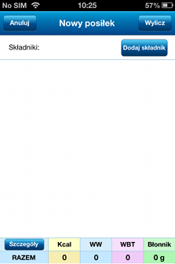
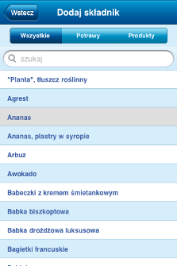
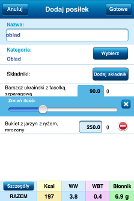
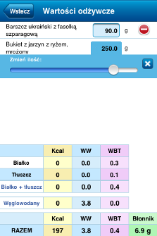
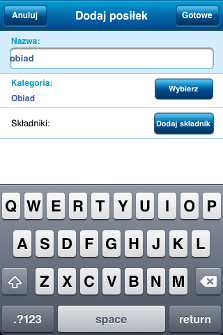

Aby dodać posiłek do listy posiłków, należy wejść w zakładkę Posiłki i dotknąć przycisk Oblicz w prawym górnym rogu aplikacji.

Składniki posiłku można dodać po kliknięciu na przycisk Dodaj składnik. Po wybraniu jednego z produktów lub potraw należy wpisać jego wagę (lub użyć slidera) i kliknąć na przycisk Gotowe.

Lista składników z możliwością zmiany ich wagi (po kliknięciu na wagę składnika pojawia się suwak) i podliczonymi wartościami odżywczymi jest do wglądu w widoku formularza. Czerwony przycisk po prawej stronie składnika pozwala na usunięcie go z listy.

Kliknięcie na przycisk Szczegóły pozwala na podejrzenie dokładnych wyliczeń wartości odżywczych dodawanego posiłku.

Formularz dodawania posiłku jest podobny do formularza dodawania potrawy.
